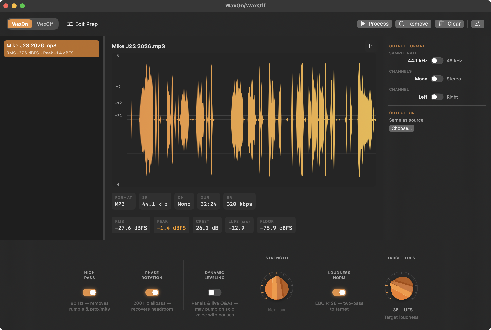
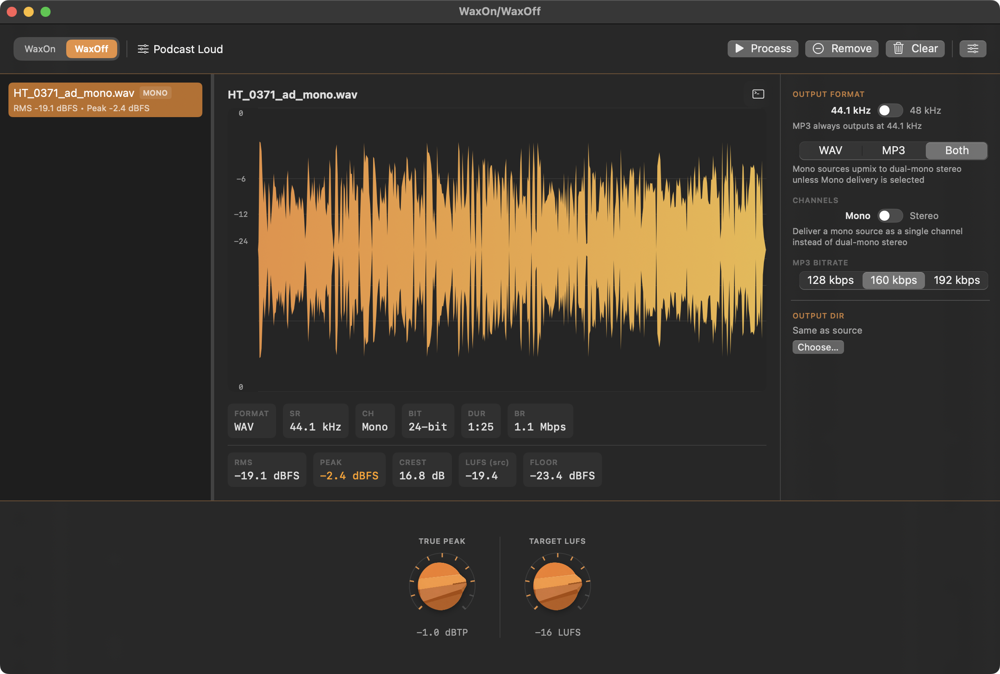

WaxOn / WaxOff
Podcast audio utility for macOS. Signal conditioning for ingest and broadcast normalization for delivery.
or brew install --cask sevmorris/tap/waxonwaxoff
macOS 14+ · Apple Silicon (M-series) · Free
WaxOn
Ingest Prep
Use before you edit
Conditions guest recordings and raw captures for ingest. High-pass filtering, optional leveling and loudness normalization, and always-on true-peak limiting — outputs a 24-bit WAV ready for your DAW.
- High-pass filter — On (80 Hz) · Off (20 Hz DC floor)
- Phase rotation — optional 200 Hz allpass (default on)
- Dynamic leveling — optional, for panel & multi-voice
- Two-pass EBU R128 loudness normalization — optional (default off)
- 2× oversampled true peak limiting — fixed −1.0 dBTP
WaxOff
Delivery & Mastering
Use after you mix
Takes your finished mix to broadcast-compliant delivery. EBU R128 normalization, true peak control, and MP3 encoding in one step.
- Two-pass EBU R128 — linear gain, no compression
- Configurable true peak ceiling (−3.0 to −0.5 dBTP)
- 24-bit WAV, CBR MP3, or both simultaneously
- Built-in presets: Podcast Standard, Loud, WAV Only
- Custom preset save & recall
Screenshots

WaxOnRaw recording prep — waveform audit & conditioning

WaxOffBroadcast delivery — EBU R128 to target loudness
macOS 14+
Sonoma & Sequoia
24-bit WAV
Output Format
Bundled
FFmpeg — no install
Free
GPL v3 open source